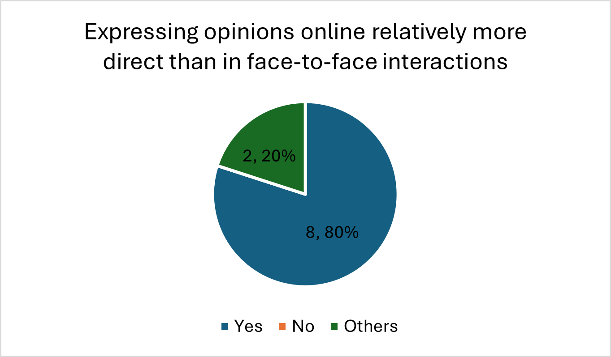
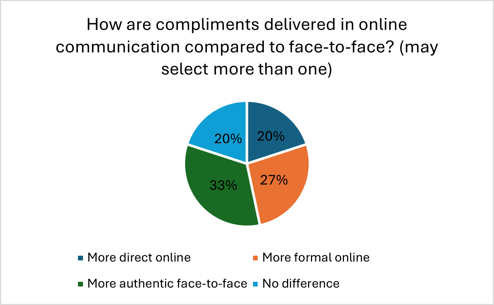
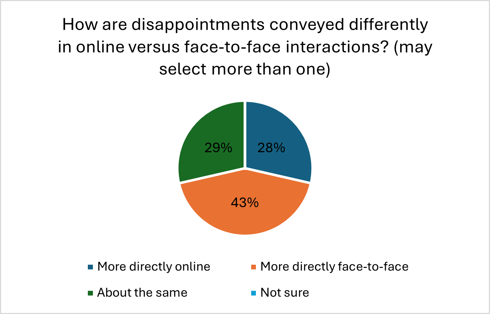

<!DOCTYPE html>
<html lang="en">
<head>
    <meta charset="UTF-8">
    <meta name="viewport" content="width=device-width, initial-scale=1.0">
    <title>LT3210 Final Project</title>
    <style>
        .bigtitle{
        background: lightsteelblue;
        text-align: center;
        margin-bottom: 30px;
        font-size: 30pt;
        padding: 30px;
        color: black;
        border-radius: 20px;
        box-shadow: 0 2px 3px rgba(0,0,0,0.1);
    }
        .analysis{
        background: rgb(220, 247, 242);
        margin-bottom: 10px;
        font-size: 20pt;
        padding: 20px;
        color: black;
        border-radius: 20px;
        box-shadow: 0 2px 3px rgba(0,0,0,0.1);
    }
        .analysis1{
        background: rgb(220, 247, 242);
        font-size: 13pt;
        margin-bottom: 20px;
        padding: 30px;
        color: black;
        border-radius: 20px;
        box-shadow: 0 2px 3px rgba(0,0,0,0.1);
    }
        
    </style>
</head>
</html>
    <h1 class="bigtitle">LT3210 Final Project</h1>

    <body style="background-color: #F7F2ED;">


        <p class= "analysis" style="font-size: 22px;"> 7. Directness when expressing opinions, Compliments, and Disappointments  </p>
    <br>
    <br>
    <br>
    <div style="display: flex; flex-wrap: wrap; justify-content: center; gap: 20px;">
    <div style="text-align: center;">
    
    </div>
    <div style="text-align: center;">
    
    </div>
    <div style="text-align: center;">
    
    </div>
</div>
    <p class= "analysis1">For expressing opinions, the LLMs show a clear consensus that people are more direct online than in face-to-face interactions. In the first chart (left), 8 out of 10 model responses indicate “Yes” to the greater directness online, while only 2 select “others”, and none choose “no”. This suggests that the models encode a strong association between online communication and more straightforward or blunt expression of opinions, consistent with research that links computer-mediated settings to reduced social inhibition and greater directness in self-expression.  
    <br>
    <br>
    For compliments, the middle chart reveals a more nuanced pattern. Around one fifth (27%) of the responses view compliments as more formal online, one third (33%) as more authentic face-to-face, one fifth (20%) responses on difference, and one fifth (20%) responses on more direct online. This distribution implies that different LLMs have diverse interpretations, and they do not treat online compliments as uniformly better or worse. Instead, they distinguish between directness, formality, and authenticity as separate dimensions. This underscores that while online messages can be efficient or explicit, face-to-face interaction still has an advantage in perceived authenticity, echoing studies that show richer non-verbal cues and relational signals in offline encounters.  
    <br>
    <br>
    For disappointment, the right-hand side chart shows that 28% of the LLMs responses rate disappointment as conveyed “more directly online”, 43% “more directly face-to-face”, and 29% as “about the same online and offline”, and there are no LLMs choosing “not sure”. The models are less unified than for the opinions that some portray online spaces as enabling blunt criticism, while slightly more see face-to-face talk as the context where disappointment is expressed more directly. Overall, the LLMs model a complex image in which online communication tends to encourage direct opinions, but evaluations of praise and displeasure depend on whether the focus is on directness, formality, or authenticity, aligning with broader findings on how different modalities shape socio-emotional expression (Nguyen et al., 2012).    </p>

        <p><b>Back →</b></p>
        <p style="font-size: 20px;"><a href="analysis.html">Interaction Style and Tone</a></p>
        <p style="font-size: 20px;"><a href="analysis2.html">Language Features and Expression</a></p>
        <p style="font-size: 20px;"><a href="analysis3.html">Communication Quality and Barriers</a></p>
        <p style="font-size: 20px;"><a href="analysis4.html">Multitasking and Language Use</a></p>
        <p><p1 style="font-size: 20px;"><a href="analysis5.html">Language Skill Development</a></p1></p>
        <p style="font-size: 20px;"><a href="analysis6.html">Perceived Formality and Intimacy in Different Modes</a></p>
        <p style="font-size: 20px;"><a href="index.html">Main Page</a></p>